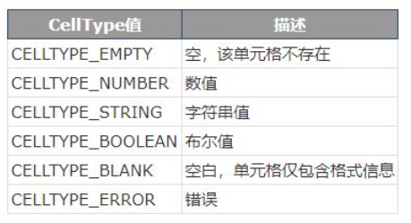

读取表格
//不再为判断是xlsx 还是 xls格式而困扰,之需把要加载的文件放进来即可返回一个Book指针
Book * JudgeExcelType(string filename)
{
Book* book = xlCreateBook();
if (book->load(filename.c_str()))
{
book->setKey("TommoT", "windows-2421220b07c2e10a6eb96768a2p7r6gc"); //破解码
return book;
}
Book* book2 = xlCreateXMLBook();
if (book2->load(filename.c_str()))
{
book->setKey("TommoT", "windows-2421220b07c2e10a6eb96768a2p7r6gc"); //破解码
return book2;
}
return NULL; //返回空说明没有要加载的文件
}
表格的类型
sheet->cellType,下面表格的数值是从0到5

使用该库的破解码
book->setKey(L"TommoT", L"windows-2421220b07c2e10a6eb96768a2p7r6gc"); //破解码
const wchar_t * x = L"Halil Kural";
const wchar_t * y = L"windows-2723210a07c4e90162b26966a8jcdboe"; //另一组
读取日期的方法
在libxl官网中给出了例子,他是将数字类型(double)的日期,通过函数dateUnpack将数字转换成年 月 日 时 分 秒,所以再读取日期的时候,先分辨是字符串值还是数值,字符串值就直接输出,数值就用dateUnpack函数转换。
#include "libxl.h"
#include <iostream>
using namespace libxl;
int main()
{
Book* book = xlCreateBook();
//format1和format2是已经定义好的格式,这都是写入需要准备的
Format* format1 = book->addFormat();
format1->setNumFormat(NUMFORMAT_DATE);
Format* format2 = book->addFormat();
format2->setNumFormat(NUMFORMAT_CUSTOM_MDYYYY_HMM);
//format3是自定义的新格式,这都是写入需要准备的
Format* format3 = book->addFormat();
format3->setNumFormat(book->addCustomNumFormat(L"d mmmm yyyy"));
Sheet* sheet = book->addSheet(L"Sheet1");
if(sheet)
{
sheet->setCol(1, 1, 15);
// writing
sheet->writeNum(2, 1, book->datePack(2010, 3, 11), format1);
sheet->writeNum(3, 1, book->datePack(2010, 3, 11, 10, 25, 55), format2);
sheet->writeNum(4, 1, book->datePack(2010, 3, 11), format3);
sheet->writeNum(5, 1, book->datePack(2010, 3, 11, 10, 25, 55), format4);
// reading 读取日期和时间
int year, month, day;
book->dateUnpack(sheet->readNum(2, 1), &year, &month, &day);
std::cout << year << "-" << month << "-" << day << std::endl;
int hour, min, sec;
book->dateUnpack(sheet->readNum(3, 1), &year, &month, &day, &hour, &min, &sec);
std::cout << year << "-" << month << "-" << day << " "
<< hour << ":" << min << ":" << sec << std::endl;
}
book->save(L"datetime.xls");
book->release();
return 0;
}